At HY-Lite, teachers are not employees — they are partners. Every teacher's long-term interests are bound to the school's own. This is our shared enterprise, not merely a job.
This team has planned lessons, refined materials and researched teaching side by side for more than a decade. Our secret is not any single brilliant teacher, but a complete teaching system — honed over ten years, every part meshing with the next.
No sales team, no paid placement, no cold calls from "course consultants". For over twenty years, 99% of our students have come to us through the recommendation of former students' parents. Good teaching, we believe, is the finest admissions office.
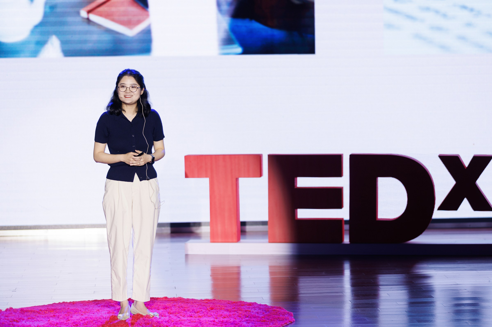
Director of Teaching · IELTS 9.0 · Perfect TOEFL Score
✨ IELTS 9.0 | TOEFL 6.0 | French DELF B2 | Korean TOPIK Level 6
📚 10+ years of teaching | 3x TEDx speaker | ESL instructor for Canadian government agencies
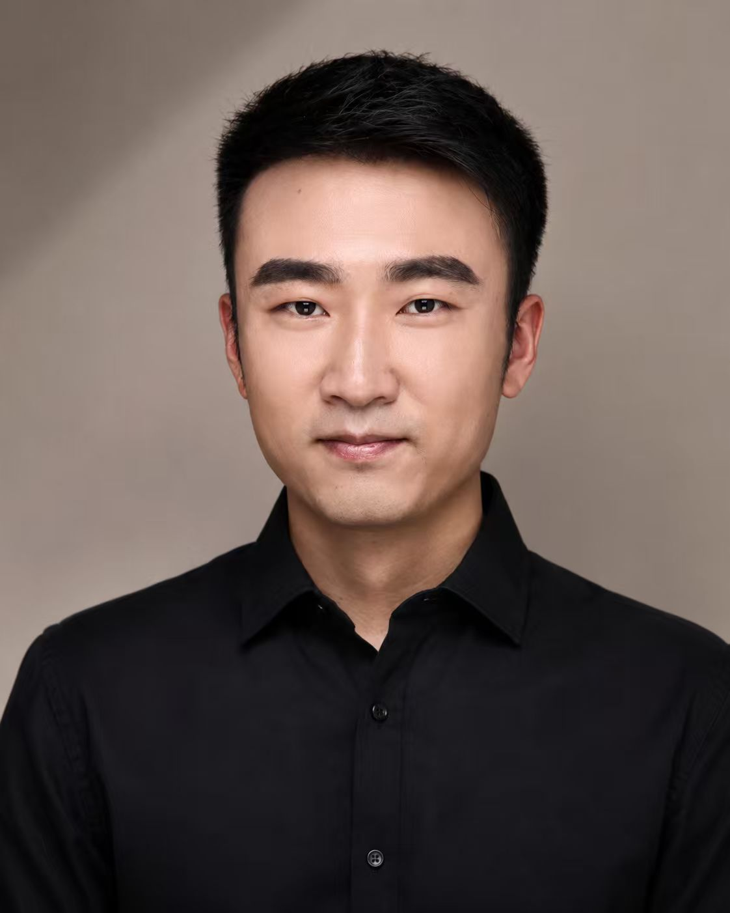
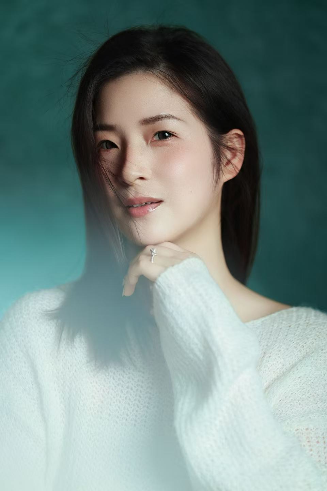
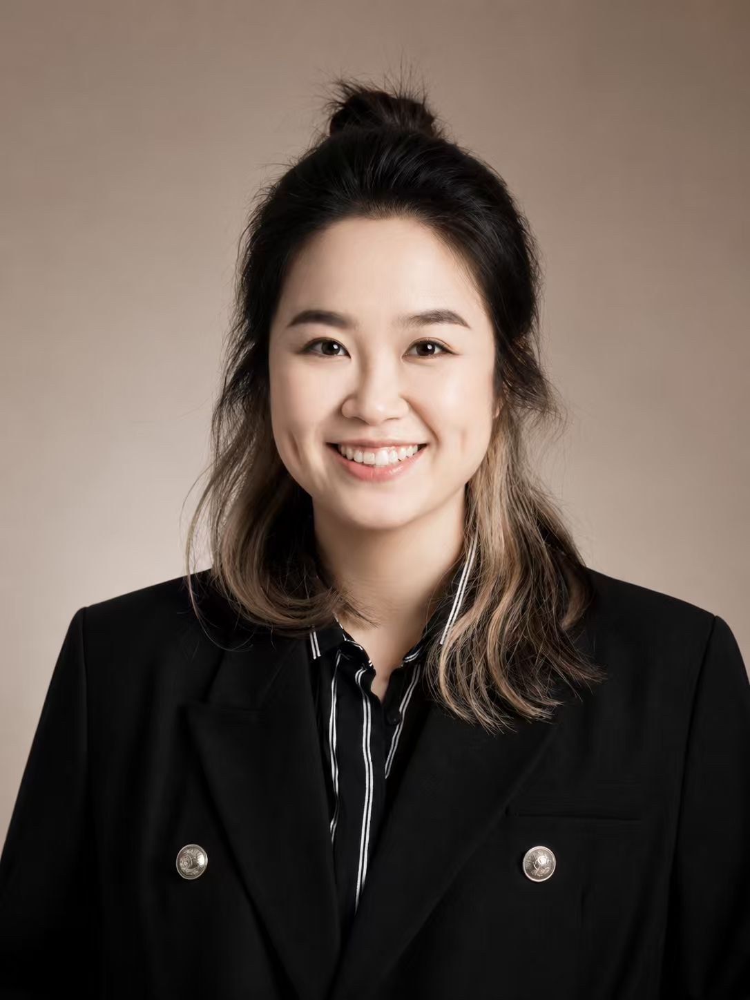
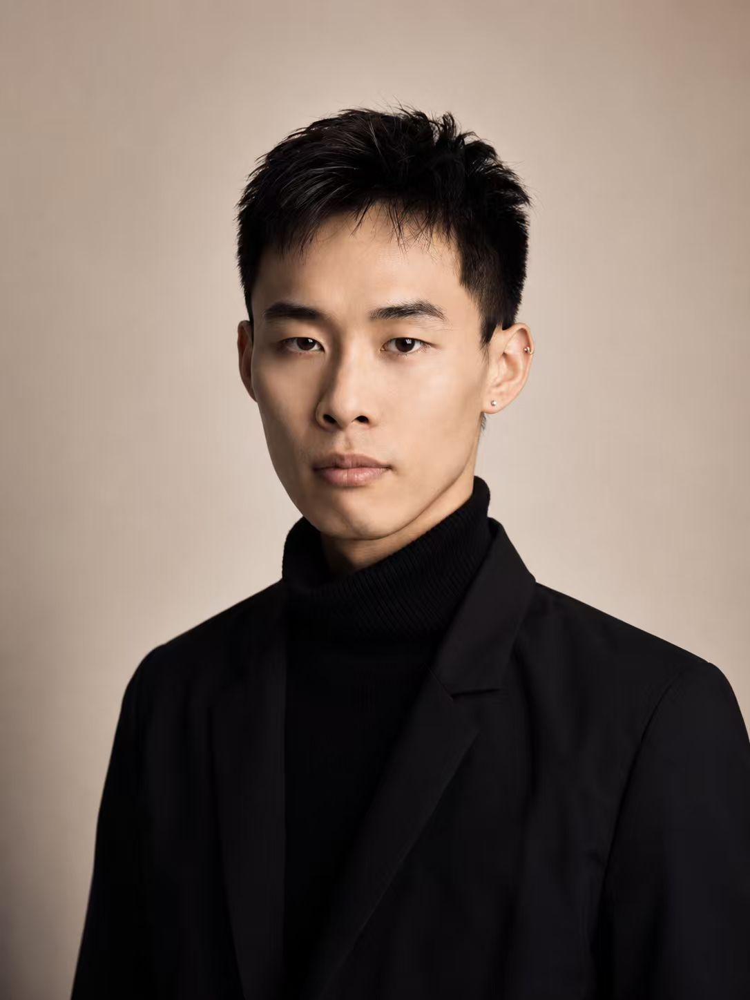
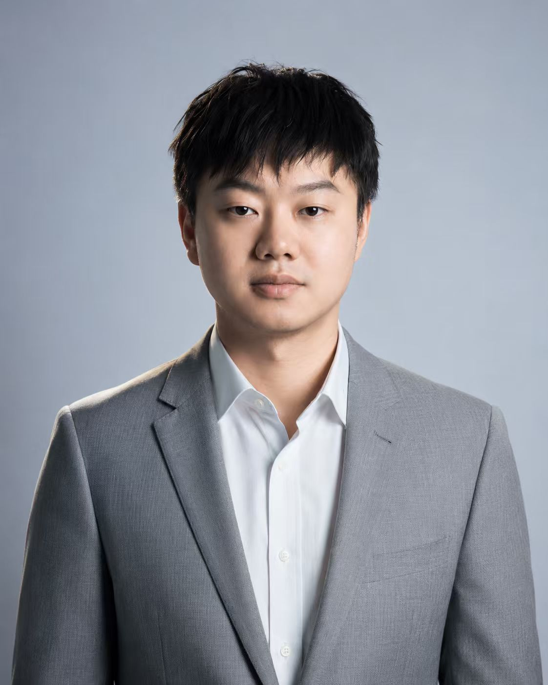
Tap a card to read the full story · press and hold to pause
"People call the Singapore scholarship a mystery. But it is, in the end, an examination — and every examination has its standard. The standard always favours the prepared."
"If self-study is fighting alone, HY-Lite was my base of operations. What it gave me was more than knowledge — it was the quiet certainty that I could do this."
"Writing, speaking, reading — plus a daily vocabulary regimen. My English grew visibly stronger, and in those weeks of intensive preparation we forged friendships that held fast."
"Preparing at HY-Lite, there was far more laughter than anxiety. Confidence is the bone; equanimity is the soul. Hold steady, and half the battle is already won."
"In the third year since admissions resumed, we finally swept the board: six places offered, six of ours — 6/6. After years of quiet cultivation, every flower has bloomed."
"Language is not the product of mechanical drilling, but the natural result of long, sustained comprehensible input and measured output. Stay curious, enjoy the process, and the scores follow of their own accord."
"'I want to study at the National University of Singapore' — a child's innocent wish, at last transformed into a goal within reach."
"It looked like luck, a surprise. Only I knew it was the result that had long been coming — earned, one revision at a time."
"They were not only my teachers but my treasured friends — friends who respected me, listened to me, and met me with complete sincerity."
"Confidence before the exam makes your preparation thorough; confidence in the exam hall lets all that work truly land."
"Jackie marked my essays down to the choice of every word, until fear of writing became the courage to write. My interview became my strongest card — never luck, but practice."
"The day her retake results came out, another student remarked: 'She's a little Jackie now.' Education, they say, is one tree shaking another — perhaps this is exactly what that means."
"The climb from 6 to 7 owed nothing to templates — it was systematic study, abundant practice, and meticulous marking."
Hello — I am the senior they call Que, recipient of the Business China Singapore Education Scholarship, soon to enrol at Nanyang Girls' High School.
Having grown up nine years at Daqiao, I dreamed of this scholarship from childhood, yet never dared stake everything on it. I was no prodigy — neither striking nor exceptionally clever. So this letter is for everyone who feels unremarkable, and is curious all the same.
On preparation. This is no sprint but a marathon of endurance and resolve: build your foundations in the first two years, earn your ticket through direct admission to Daqiao's senior school, then sit the examination in July. The English is harder than IELTS — for vocabulary you can only trust your accumulation — but error correction, reading and writing all follow discernible patterns. Practise both essay genres evenly, and always against the clock. Nor is the aptitude test sorcery: the little white book HY-Lite issues may not raise your IQ, but it will make every question type an old acquaintance (this senior insists). The mathematics needs no discussion — it is gentle. The interview is what matters most: the school does not necessarily choose the most brilliant candidate, but the one most likely to flourish there.
On effort. Success takes two catalysts: intelligence and diligence. I could not be the cleverest, but I could resolve to be the most diligent. In those months I wrote more than twenty timed essays, finished three volumes of reading and the entire white book; my English climbed from the seventies in Year 7 to the top ten of my cohort. I wept more than once — and found, in the end, that tears forge the brightest medals.
On passion. The book club, the Dream of the Red Chamber society, the fifty-five books I donated to the school library — I had always thought these mere hobbies. They turned out to be the most persuasive lines on my application. Passion, it turns out, is the finest résumé.
People call the Singapore scholarship a mystery. But it is, in the end, an examination — and every examination has its standard. The standard always favours the prepared.
Keep your dreams, hold your course, look to the future, and act. The gates of a new world stand forever open to you.
In Year 8 I hosted an exchange student from Hwa Chong Institution; the following year I visited Singapore with my school. There I saw, for the first time, a truly open classroom — group discussion, independent inquiry, free expression. In that moment I decided to try for Singapore.
Direct-admission class brought competitions, student council, societies and appraisals all at once. I set myself one rule: schoolwork would not slacken, and neither would my Singapore preparation. Between classes I worked through problem sets; in evening study I read ahead into the senior curriculum; at home I opened the vocabulary book and closed the gap word by word. That double pressure forced me into efficiency. The mathematics textbooks for Secondary 3 and 4 fell one after another, and the post-exam intensive course sent my English climbing. Balancing both is no myth — if you are willing to push yourself.
If self-study is fighting alone, HY-Lite was my base of operations.
For the written papers, HY-Lite's course covered nearly every question type — vocabulary, reading, logic — with complete sets of materials (I never finished them all; there was more than enough). Jackie walked us through every essay step by step, marking down to the individual word, offering alternative phrasings, until my fear of writing became the courage to write.
The mock interviews were the great deliverance. My English base was weaker than some of my peers', but after round upon round of rehearsal with Jackie and the seniors, I learned to order my thoughts and meet the unexpected with composure. My interview became my strongest card — never luck, but practice.
What HY-Lite gave me was more than knowledge — it was the quiet certainty that I could do this.
Looking back, I would share two things:
First, keep faith in yourself. Do not stare at your weaknesses. Your vocabulary may trail others', but your interview or your writing may shine. Trust yourself, and trust the value of every rehearsal.
Second, plan well. Direct-admission classes are heavy; with competitions, school hours must be used to the hilt. I kept a daily task list, interleaving Singapore preparation with schoolwork, never cramming at the eleventh hour. HY-Lite provides more material than anyone needs — do not attempt it all; strike where you are weakest.
One last word from the heart: the Singapore route is no refuge from Gaokao, but another battlefield demanding everything you have. I am grateful to Jackie, Chris and Ben, to the seniors who helped me these months — and to the self who gritted through all those midnights.
My days at HY-Lite were intense, demanding, and profoundly full. The course spanned the three great pillars — writing, speaking and reading — plus a daily vocabulary regimen, so that by exam day my English reserves had visibly deepened.
Jackie's writing and speaking classes gave me the most. In writing we studied the logic of argumentation systematically, practising varied and complex sentence structures until essays grew rigorous in shape and precise in expression. Narrative writing showed me my own limits — my English still wants for fine descriptive detail. Vivid storytelling is not conjured overnight; it asks for long reading of originals and a patient hoard of idiom. Yet whatever the genre, the discipline is the same: before pen touches paper, order the logic, fix the thesis, then unfold it layer by layer in clean, exact language.
To mirror the real examination, HY-Lite arranged full-dress mock interviews. Pairing up with classmates beforehand dissolved much of my nervousness, and Jackie's notes on my performance were exact: slow the tempo; choose plain, precise, everyday words.
Reading was taught by Ben, who took us through the craft of every question type. What served me best: reading a passage's logic through its hinges — instead, however — so the turn of an argument, and the author's stance, revealed themselves at a glance.
Through the intensive weeks we drilled side by side and grew together, forging friendships that held fast. The seniors' sharing sessions were another gift — real exam accounts, practical technique, the rhythm of the day itself. One senior's advice stayed with me: do not wrestle any single aptitude question; finishing within time is everything. In the hall, that one line governed my clock.
My thanks to every teacher at HY-Lite — Jackie, Ben, Chris — and to all the tutors, seniors and alumnae!
No Daqiao childhood escapes the dream of Singapore. It sits in the distance like a medal polished over and over, quietly gleaming. I was no exception — the seed was planted in primary school and lay dormant for years. And this summer, with a measure of luck and a stubborn refusal to fall behind, I finally pushed open that once-unreachable door.
Let me tell you, slowly, about the wavering, the preparing, and the understanding of those days.
Part 1: The written papers — cultivate the bullseye
Mathematics first: the one gentle stretch of the whole examination. Nothing devious — every question lands on ground you have crossed a hundred times in primary and middle school, and all of it fill-in-the-blank, sparing you the labour of written working. Two hours are given; one usually suffices, and the remainder belongs to a single word: accuracy. Two or three practice sets to find your touch is plenty. The only caution: questions come in English — though our invigilator kindly provided translations, so do not fret over terminology.
The true watershed is the aptitude test — close combat with the clock and with unfamiliar question types. In my view, wearing out the little white book before the exam is enough, plus some speed work and the art of guessing with reason. Even so, the real paper produced one type we had never met, and my heart tightened as I wrote. Be warned in earnest: sixty minutes for the whole paper is brutally tight — students beside me could not finish.
As for English — the acknowledged tiger in the road. The essay is a blade you can grind in advance. I trained under Jackie at HY-Lite, though we had staked nearly all our powder on argumentative writing, and the exam ambushed us with narrative. In fairness, Jackie's coaching on argument transformed me utterly, and for that my gratitude is real. Narrative leans harder on your daily hoard of material: thirty minutes to compose means conceiving like an arrow leaving the bow — without a granary of viewpoints and a pouch of stories, you will find your pockets empty. (Leafing through my first draft, dense with Jackie's red annotations, the distance to the final version astonished even me.)
English Part 1 allows ninety unhurried minutes, but the vocabulary is staggering — rarities like "purveyor" make the list. Daily accumulation rarely scores a direct hit, yet it paves the longer road. The tractable parts — preposition filling and reading comprehension — yield to HY-Lite's classroom methods. And do not despair: English is a chasm for everyone, so the gap in marks is narrower than you fear. My pre-exam IELTS 7.5 served mostly as a steadying pill.
Part 2: The interview — meet all changes with one constant
Poached mid-course by my school's mathematics olympiad, I missed nearly every interview class, and had time only to polish three core questions: Why do you want to go to Singapore? Why are you eligible? Why are you one of the best options?
Nanyang's interview essentially orbits those three axes. The key is to treat your prepared answers as building blocks, not scripts — assembling and trimming them live. Our panel was unusually kind; the whole affair felt less like interrogation than conversation between equals. In preparing, consider how to fold your answers, without visible seams, toward the school's motto and its bilingual, bicultural character. And remember the wordless language — warm, steady eye contact; a posture upright but never stiff — which reaches the heart before speech does.
Part 3: Composure — ease is its own power
Looking back, I count myself relaxed through the whole campaign — helped, admittedly, by a gentler field among the girls that year. What I want to say is this: confidence is the bone, equanimity the soul, and anxious grasping only squanders the spirit. At HY-Lite, laughter outweighed worry, and the pressure thinned without my noticing. In the hall, temperament outweighs technique: hold steady, and half the battle is won. In the interview above all — the more at ease, the more alive; the more nervous, the more the word sticks at the lip. Be generous, be loose, and the panel will see the light in your eyes.
A final word: beyond the result, everything is a gift
Each year the selection is a sieve — sifting out heartbreak, sifting in surprise. Some are suddenly favoured by fortune; some acknowledged as formidable stumble against all expectation. When my offer arrived I felt none of the imagined rapture — only an unusual calm, as if the result had settled long ago, in all those unwitnessed days of quiet work. Believe this: ability is the only hard currency, and time does not cheat the persistent. And if you are passed over — grieve properly, dry your eyes, and stride on to the next mountain and sea without looking back.
My days at HY-Lite are a bright footnote in my memory. Around me were comrades-in-arms, every one of them fire-eyed and swift-footed, and their momentum lent me courage enough to stand exactly where I belonged when it counted. The seniors poured out everything they knew — lamplight in the dark, every sentence the sincerity of those who had walked before.
From trepidation to certainty, the road was not smooth, but every step counted. May these ramblings brush away a little of your fog — and may everyone who carries a distant dream arrive, at last, at their own sea of stars.
This year's Business China Singapore Education Scholarship results have settled. In the third year since admissions resumed, we finally swept the board: six places offered, six of ours — 6/6. After years of quiet cultivation, every flower has bloomed.
At this moment each year my feelings are mixed, and regret often outweighs joy. When results come out, my first thought is never celebration but consolation — how to comfort the students not yet chosen — and sometimes, mid-sentence, my own eyes blur. Wanting and not obtaining is one of life's great courses, and every year I take it again alongside my students. The coursework, of course, is finally theirs to complete; I witness their labour, but cannot live it for them.
The gladness is real too. Beside the lesson of longing, there is labour that flowered and bore fruit, worth celebrating properly. One student filled an entire notebook with essays; another memorised a whole volume of vocabulary; others, paper after paper, kept raising their own ceiling. Let me say once more what I believe: every student who prepared has solid learning and admirable character. Some had the deeper affinity with Singapore and were chosen; for the others, the road ahead remains bright — of this I have no doubt.
The one thing I dare claim is that we offered true companionship. Each year we and this cohort forge something like comradeship — deeply personal. From early June back in Wuxi until today, I have worked morning to night at their side: marshalling every resource, printing set after set of papers, drilling interview after interview, marking essay after essay. Seniors already studying in Singapore returned expressly to share their experience, giving the juniors a first true glimpse of life and study there.
This year, every flower has bloomed. Next year, we return to our quiet cultivation.
The first time I walked through HY-Lite's orange-and-white door, I never imagined that three months later the course of my life would change entirely. "I want to study at the National University of Singapore" — a child's innocent wish, at last transformed into a goal within reach. Thank you, HY-Lite, for setting a small girl's hidden dream in motion.
Reading class — my first taste of English's treachery
In those two months I learned, for the first time, what it means to understand a passage completely differently from what it actually says.
But we had Ben with us all the way. On drowsy afternoons a single joke of his would wake the whole room; the tale of the little girl and the pirates ran through the entire course; and under the gentle menace of "dictation in one minute", we gnawed through close reading after close reading. A classroom both loose and taut lent lightness to what might have been drudgery. Thank you, Ben, for teaching me how to read — and for kindling my appetite for reading itself.
Writing class — Jackie's midnight red pen
There was a time I completed 450-word essays by way of machine translation. Thank you, Jackie the tireless, for showing me the joy of free expression in English.
Unlike Ben's, Jackie's classroom ran taut: one coffee, one laptop, her gentle, lucid voice weaving through the clatter of keys. On my exercise book, red ink threaded between the black — every error caught, every endnote lean and exact. "Still marking essays at this hour" — so read Chris's post one night. Behind every carefully marked essay stood Jackie's devoted midnights. And thank you for that cup of milk tea, which sweetened the hardest days.
Planning class — Chris, master of time
And how could I leave out Chris? To a seasoned idler like me, his sternness was a struck match. Brilliant-coloured schedules filled every minute; work that looked unfinishable was, under his arrangement, squeezed in item by item — one must salute the master of time management. And in high summer, the chilled honey water and swiss rolls chased the restlessness away. For my own future, I laboured shoulder to shoulder with these devoted teachers.
Nor should Ms. Lecea the mathematics teacher go unthanked — homework marked deep into the night, every page carrying her care; and Matt, our foreign teacher, ran mock interview after mock interview until the nerves let go.
The days of striving — laughter and tears
Those days were bitter and exhausting, full of laughter and tears alike. On several midnights I curled up in bed, fighting heavy eyelids, forcing down one more word and one more; more than once, convinced I was making no progress at all, I cried quietly under the covers.
And in HY-Lite's library we laughed together, cheered each other on, and outlasted one hard dawn and dusk after another. Seen from here, all of it was worth everything.
I missed the Zhongkao and will miss the Gaokao, yet at HY-Lite I gave my youth its stripe of striving. When the offer came, many congratulated me — but I want to say: this success belongs to two months of shared labour, teachers and classmates together. Truly, whatever the outcome had been, I would treasure this rare passage all my life — it kindled my love of English, and let me live out Daqiao's motto of striving.
Last of all, thank you to my parents and godparents — who, on that one evening, switched on my heart's resolve to go out and try, and helped me find the best answer to my own future.
Onward, without wasting the years!
I have never had iron discipline, and dare not boast of my diligence. A veteran of lying flat, I stole every idle hour that could be stolen.
Thank you, HY-Lite. This warm family met me with boundless tolerance and delight, melting my sorrows and my awkwardness. What they taught me was more than knowledge: a wider horizon, a settled temper, a plural way of thinking — so that I could walk forward unhurried. The benefit, without question, is for life.
Thank you to the teachers. The after-class feedback that ran to small essays; the group chat chiming late into the night after Jackie finished marking; the physics problem Chao was still explaining at eleven; Chris and Franco, who flew to Singapore to scout the schools, buy the papers, and — on exam day — light incense for us... (There is far more than I can ever write down.)
I had gathered a pile of adjectives for my teachers: witty, gentle, ardent, devoted, patient, tireless... But what I most want to say is this — they were not only my teachers but my treasured friends, friends who respected me, listened to me, helped me untangle the knots of daily life, and met me with complete sincerity.
"Come on now! No lying flat before the exam — you're representing HY-Lite out there. Go and sweep the field!" (Editor's note: one can tell at a glance this was not Chris speaking.)
Even facing my hopeless, mud-soft argumentative essays, they never rationed their praise or encouragement, embracing my flaws like a roaring fire in deep winter, its heat warming us through. My thanks to every one of them.
Thank you to my classmates. At HY-Lite, everyone around you writes as if racing. The moment you sit down in the library, the turning of pages and the scratch of pens fill both ears; look up and you meet expressions of a seriousness never seen in idle chat — and peer pressure tows you forward, one step, then another.
We lived in harmony and lifted each other: puzzling through science problems together, drilling each other on vocabulary. Candid in study, growing through exchange — honest competition is a fire that burns open the road ahead, its branches reaching out to hoist every HY-Lite student toward higher, farther skies.
Finally — thank you, Mum and Dad, for backing the road I love. (Two hand-drawn hearts 💗)
HY-Lite is the best! Full marks, HY-Lite!
The summer before last, I learned by chance that Singapore's SM1 programme had reopened — an international route that would spare my family the expense — and with a heart full of Singapore, I resolved: Nanyang Girls' High, or nothing.
This summer, with fortune's small blessing, that dream came true — surprising, and yet inevitable.
I. A study plan of one's own: direction over effort
From Year 9 I kept a plan tailored precisely to myself — the great guarantor of my success. How to build such a plan? Three steps.
First, know your strengths and weaknesses coldly. My mathematics was sound — and a major scoring subject for SM1 — so steady schoolwork plus light weekend practice sufficed; Chinese and physics were my short boards, and the after-school hours went to them first.
Second, study scientifically. The sciences reward grasping the essence of a problem: I broke through with hard problems and by cataloguing the conditions under which each formula applies. The humanities lean on memory and logic: I distilled keywords first, then strung whole topics upon them, and recitation grew swift.
Third, patch the gaps relentlessly. After every practice, ask which formula, which concept, failed you — then strike exactly there. Now and then I enlisted AI tools to sharpen the efficiency.
II. Effective preparation: efficiency over hours
Learning is not the hours you spend; it is hours multiplied by efficiency.
Preparing for Singapore, I did not drown myself in papers. I compared the Singaporean examinations with our own, found the differences, and trained against precisely those.
In mathematics the battle is reading the question: I memorised the standard terminology, then used three or four mock sets to learn the question types and absorb the unfamiliar English.
English, Singapore's first language, is the long game: vocabulary and IELTS past papers over months; before the exam, know the format and warm up with two or three sets — no more is needed.
The aptitude test is an exam of chance — first learn to solve, then learn to speed. I ran forty questions a day for familiarity's sake.
For the interview I owe Jackie true thanks (her question predictions struck home). In class we dissected answering frameworks until my logic ran clean under pressure; she prepared key language around my strengths and polished the delivery. Six hours of precision coaching on the eve — richly repaid. In the final week, keep ninety minutes of speaking aloud every day; what you cannot say, look up — and walk in confident.
III. Equanimity: temperament over technique
Everyone chasing Singapore is formidable; pressure is normal. Regulate yourself, keep faith, and that is enough.
A steady temper is the key to steady performance. In the written papers work at your natural pace (outside the GAT and the essay, time is ample); skip what refuses to yield — never stall, never panic. What is hard for you is hard for everyone. The interview is light and cordial: present your logic and your strengths, and let that be all. In one sentence: relax, and let your true level speak.
In closing
Looking back across that year — so many hard hours, and so many small lights after persistence. When the full-scholarship offer arrived it looked like luck, a surprise; only I knew it was the result that had long been coming, foreshadowed in every plan kept and every gap patched — inevitable, in the end.
My thanks to the family and friends who carried me, to HY-Lite for its materials and its help (teachers of great patience and greater substance), and to the self that never let go.
May every sincerity be treated gently by time — and may you, running your own road, meet your own inevitable surprise.
T'was amazing grace, how sweet the sound.
The afternoon after my final interview, coffee half-finished, post-exam nerves still jangling — the call that should have come at six rang at half past two. In Chris's office, in that instant, something like a return to primal joy was observed!
When the elation subsided, it was time to give thanks properly: to the self that had refused to quit for months, and to the teachers who ran the whole distance alongside.
Part 01 — Precision teaching
My English base was decent: before Hwa Chong I sat IELTS nearly cold and took 7.0 first attempt (no match for the titans of the comments section, but this humble student was content); at Daqiao my double-unit English held steady in the top three.
But HY-Lite's teaching was bespoke tailoring: wherever you jammed, there they broke through. Writing was my weakest seam, and Jackie led us from essay to narrative, untangling knotted logic and stiff vocabulary strand by strand. Reading struck the pain points precisely — preposition drills, the craft of guessing meaning — compounded by Ben's logic training of machine-like rigour. Trust me: you will come away with a new conception of English itself.
The interview likewise. HY-Lite's interview training covers the full 360 degrees. Singapore's schools are not there to trip you; digest what is taught, drill it smooth, dare to speak and fear no error — and that is already excellent.
Part 02 — Vocabulary, the long tug-of-war
The Singapore selection is, at its core, a tug-of-war over vocabulary. Seventy percent of English Part 1 tests vocabulary, and tests it in every disguise; in mathematics, misread the question and no IQ will save you.
An example: I held IELTS 7.0; a girl who sat with me held 8.0; a senior held TOEFL 106. All three of us were admitted — and all three confessed: the vocabulary, we never fully tamed!
My advice: hoard words without limit, and never stop at the teacher's assignment. My own habit ran to three or four hundred a day, rolled over and over — repetition is where they take root. Keep pace with the exercises too; direct-admission students with time to spare should read everything through and convert it into fluent output. The visible leap in my writing and interview scores had one secret: refine, then convert.
Part 03 — Confidence, before and during
In preparation, give ten-thousand percent in effort and in care; in the hall, hold steady and let no hard question shake you.
Jackie forever teased my "hopeless narrative writing" — yet on exam day the essay never showed, and I had no choice but description. Everyone found it brutal, so my "hopelessness" no longer stood out.
At the interview I was grouped with a student whose spoken English outran mine entirely. I made no attempt to outshine him — I simply said what I had prepared, clearly and completely. Both of us advanced.
Confidence before the exam makes your preparation thorough; confidence in the exam hall lets all that work truly land.
And one more thing: keep a second road open. Don't put all your eggs into one basket — whatever the result, having truly tried, we owe the future nothing less than courage. Don't we?
Last of the last
My thanks to all the teaching staff: Jackie, Ben, and Principal Chris; and to the full corps of tutors — Ms. Lyu, Ms. Guo, senior Jin of Daqiao, senior Wu of Daqiao and North London Collegiate Singapore, and Robin Wong of Canada...
Thank you all for these months of company!
In the IELTS I sat the summer after Gaokao, I had the good fortune to score 8.5. Let me take the occasion to share some modest thoughts on learning English, and the road that led here.
My first IELTS came the summer after Year 10. I had just finished twenty hours of one-to-one speaking and writing with Jackie, and on the strength of that systematic training took 8.0. Looking back, that experience taught me the true weight of the word "methodology".
Beyond Jackie's pointers, I also studied at HY-Lite for a stretch — reading and writing courses with Ben, Elsie and Chris. Those foundations let me gradually find a rhythm of my own on the long road of English.
My belief: language acquisition is, at bottom, a matter of input and output.
Input must be chosen well. Use the scattered hours — podcasts, the foreign press, films and serials — for "comprehensible input": material pitched slightly above your present level. Seek it in the subjects you love, and input becomes pleasure; the learning turns natural, and it lasts.
Equally vital is the channel between input and output. Great volumes of input are only truly internalised by being converted into output. The process asks for a kind of awakening — patient understanding and digestion of the material. There is no fixed recipe; it is closer to a quiet meeting of minds. May you each find your own path.
In the balance of the two, my habit is input far exceeding output. Even in my final year I hardly practised essays outside examinations — before the IELTS written paper I had not once put pen to page — compensating with depth of understanding instead. And I have watched classmates succeed the opposite way, letting heavy writing and speaking practice drag the input along behind. Whatever fits you is best.
And then there is imitation. Imitation is not copying; it is studying the logic and architecture beneath the language. From imitation to understanding to a style one's own — this is the path I recommend above all.
As for this examination — preparation time was scarce. In the two months after Gaokao I barely touched English. A single day separated the written and speaking papers, and I spent it at an amusement park, at a concert (the singer, for the record, was wonderful). Happily, the result was a pleasant surprise.
In truth it owed everything to one full day of concentrated review — I read Jackie's model essays for Cambridge 16–19 one by one, frame by frame, harvesting angles on each topic, studying the architecture, copying out the recurring phrases and structures. Those careful hours gave my writing its deepest inspiration.
Speaking I had barely prepared, having played too long — half a day collecting Part 2 material and threading the topics loosely. Yet in the hall the words came freely: the dividend of long accumulation, and of Jackie's and Chris's steadying words before the day.
Language is not the product of mechanical drilling but the natural harvest of long, sustained comprehensible input and measured output — listening and reading flowing into speaking and writing. Stay curious, enjoy the process, and the scores arrive like water finding its channel. May English carry each of you into a wider world!
Fingers crossed for all of you. ✨
Postscript: Jackie's observations
To every teacher who has taught her, Xingyu is singular — my laptop keeps a folder in her name, for the materials prepared for her alone. Her mind is a super-sponge: for every lesson we prepared three times the usual volume just to feed her appetite for learning. In my observation, her ability rests on at least three qualities.
First, reading. The sheer volume and speed of her reading command my admiration and, frankly, my envy. I have always held that reading and reflection are the most effective study there is, and Xingyu is its finest proof. I still remember our first lesson: I handed her a very long National Geographic interview with Dr. Fauci — a dozen pages — and she finished it swiftly and answered my every question exactly. Her mother says she has loved books since childhood (hence, too, the deep myopia). In an age drowned in screens, such a capacity grows only more precious.
Second, focus. Not the focus of perpetual note-taking, but of a mind that thinks and screens at speed while the information flows in. One small scene: in class I asked her to highlight the unknown words in a model essay. She rummaged her battered pencil case, produced one highlighter — dry; another — dry again; and settled finally for her eternal black gel pen. That New Year I sent her a boxed set of highlighters as a tease.
The day before her first IELTS we held our final lesson. Only upon reaching Suzhou did she discover all her notes left behind in my classroom, so I scanned every page and sent them on. It was my first sight of her notes: sparse, spare, the handwriting hasty — yet holding nothing but the essential principles, methods and key vocabulary. She spends her classroom hours and mental horsepower on the work that matters — deciding what is important and what deserves execution — and refuses to budget attention for the rest: highlighter versus black pen, pretty handwriting, colour-coded notes.
Third, intelligence. Not genius, not exotic wiring — but a grasp of "play to the rule", that simplest of life's philosophies: our world runs on rules, and to win one must honour them and use them.
Xingyu took not only 8.5 in IELTS but 146 — a near-perfect score — in Gaokao English. The two examinations differ deeply, and she read the difference in the rules exactly, adjusting her performance to each. Before her IELTS retake we held not a single lesson. I merely charged her: run a few speaking mocks; in writing, control the clock, hunt your errors, elevate the language wholesale rather than the connectives alone, use pronouns for cohesion, move the adverbials for grammatical range — then sent her a dozen of my own practice essays from before my writing 8.5. She spent one day absorbing them, and went in.
Later, watching her mark essays for our students as a tutor, I caught in her paragraph transitions the unmistakable shadow of my own habits. The day her retake results came out, another student remarked: "She's a little Jackie now" — and I was glad beyond telling. Education, they say, is one tree shaking another. Perhaps this is exactly what that means.
Across the years we have watched her steady ascent: from Daqiao to Tianyi to Fudan, rehearsing for the Cambridge interview deep into the night, declining the olive branch of the National University of Singapore for the school and discipline of her dreams. The road held its share of setbacks and pressure, but Xingyu is resilience itself — and in her idle hours, besides her books, she still makes time for that concert, and for a classmate's university-application livestream.
May she, at university, continue to "learn broadly and hold fast to purpose; question closely and reflect on what is near" — and unfold life's fuller possibilities.
When I first scored 6 in writing, I had merely memorised some templates and trend-describing phrases, with hardly any real practice behind them. Then, in class, the marking criteria and the demands of each section were laid out systematically, and my stock of structures and vocabulary was rebuilt.
Most decisive of all: I wrote every day and handed every piece to Jackie, who returned each one with the exact faults named and the way forward marked. Through that cycle of repetition I learned to seize the data in a chart faster, to err less, to write quicker — buying precious minutes for the main essay.
I used to write with a Gaokao-essay mind; IELTS asks instead for social perspective and unfolding logic. Under her guidance I mastered several universal openings that move swiftly into the argument, gathered core vocabulary across the topic map, and studied the standard modes of argumentation. She had me read excellent models and imitate them against her corrections, until my paragraphs unfolded in genuinely idiomatic language.
In sum: the climb from 6 to 7 owed nothing to templates. It was systematic study, abundant practice, and meticulous marking. Jackie not only ordered the logic of writing in class, but patiently corrected every essay I wrote after it, until I understood precisely how to improve. Sustained practice with professional feedback — that is what broke the ceiling and delivered the score.
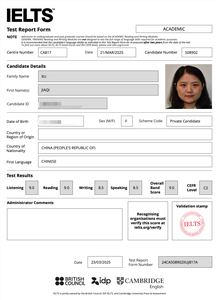
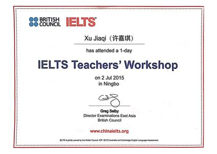
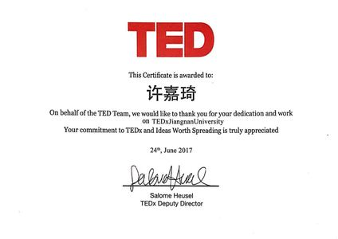
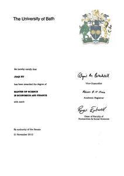
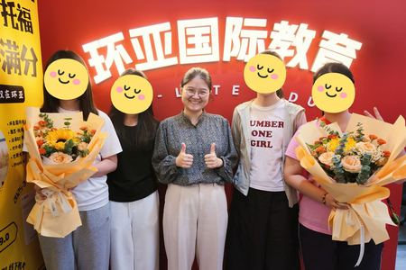
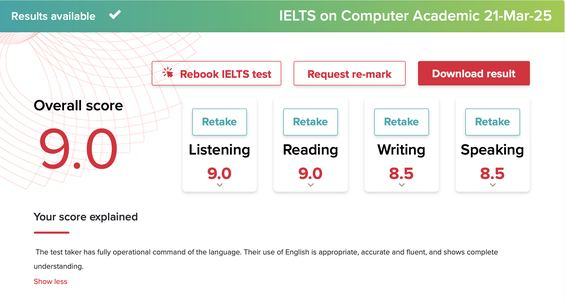
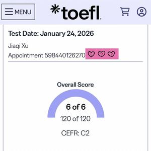
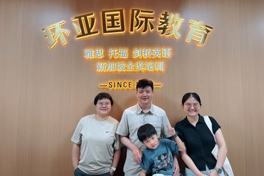
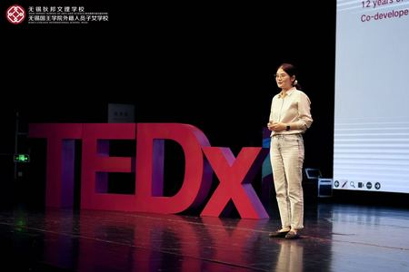
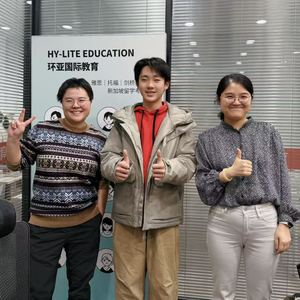
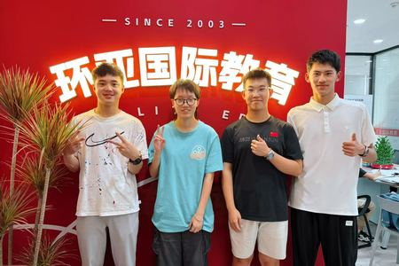
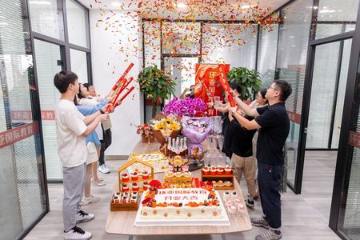
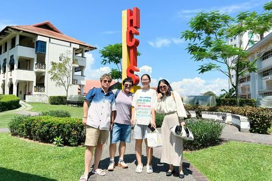
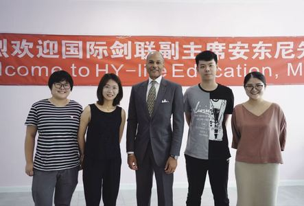
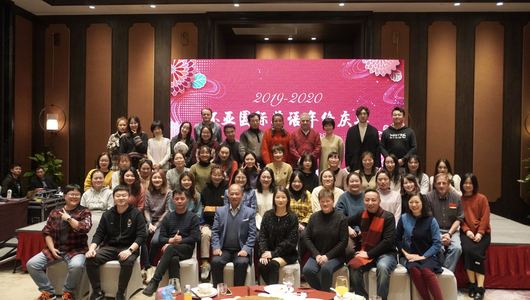
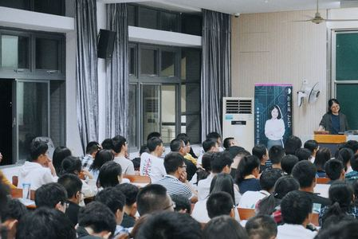
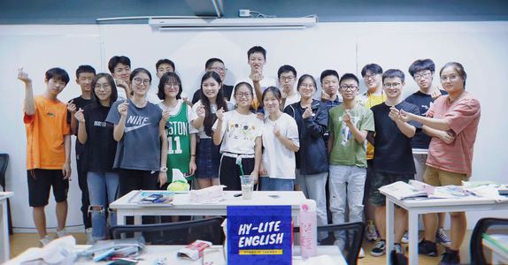
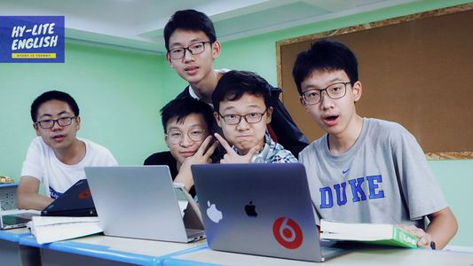
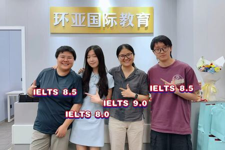
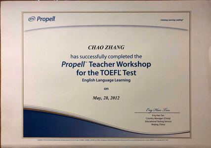
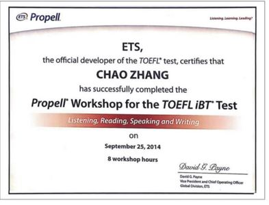
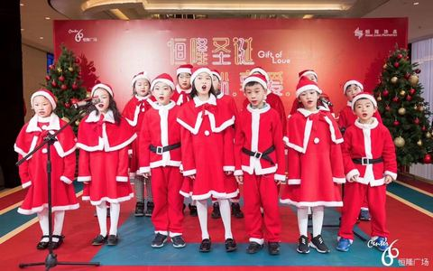
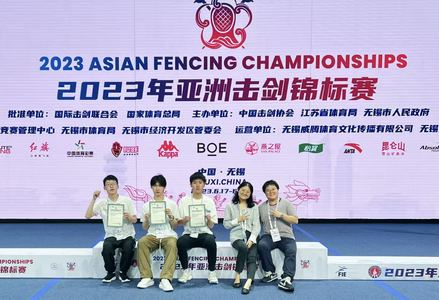
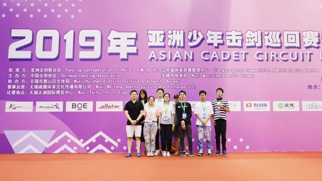
 中 / EN
中 / EN